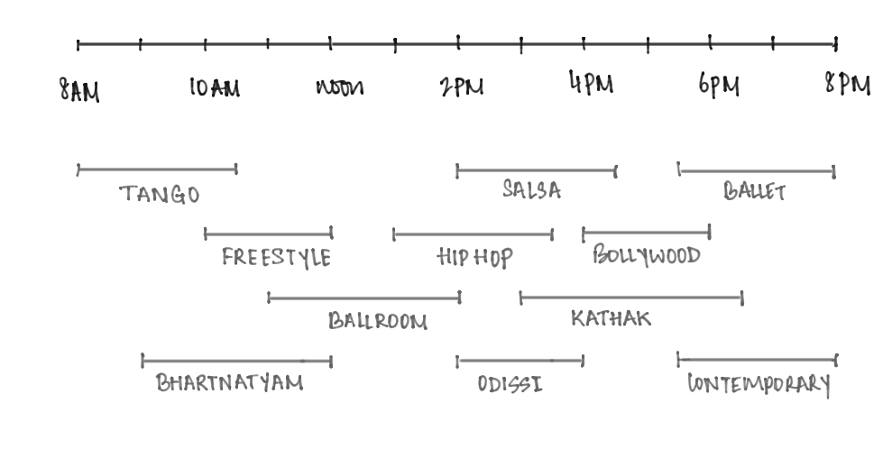
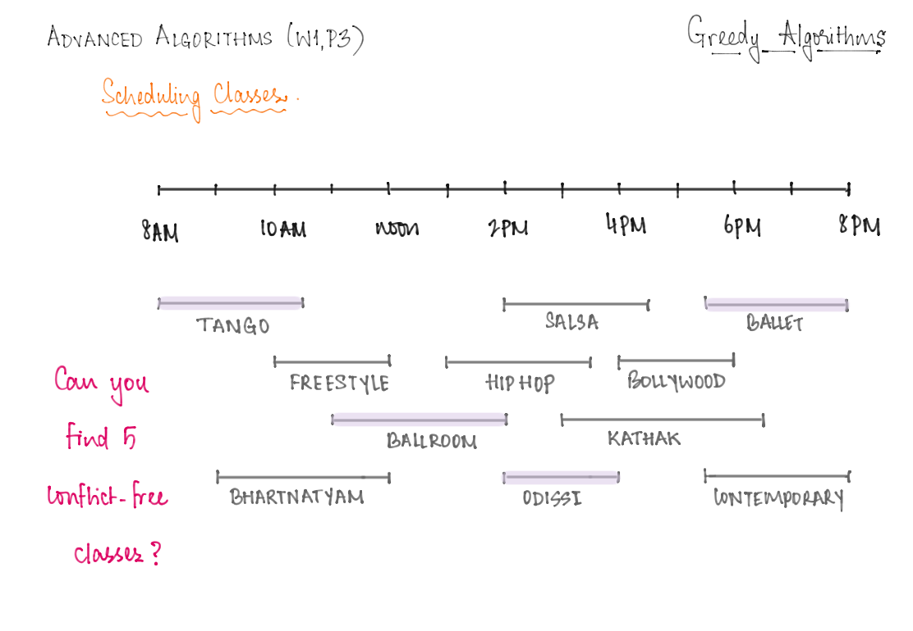

2. A Scheduling Problem
This write up is borrowed (with minor adaptations) from Chapter 4 of Jeff Erickson’s textbook on Algorithms.
The Problem
Suppose you decide to sign up for dance classes, and a dance academy next door offers a bunch of classes, but only on Saturdays. You cannot take two classes whose timings overlap: for example, in the example shown in the figure below, the Bollywood and Ballet classes are clashing, so you would have to pick one between the two.

More formally:
- Suppose you are given two arrays S[1 .. n] and F[1 .. n] listing the start and finish times of each class; to be concrete, we can assume that 0 \leq S[i]<F[i] \leq M for each i, for some value M.
- Your task is to choose the largest possible subset X \in\{1,2, \ldots, n\} so that for any pair i, j \in X, either S[i]>F[j] or S[j]>F[i].
We can illustrate the problem by drawing each class as a rectangle whose left and right x-coordinates show the start and finish times. The goal is to find a largest subset of rectangles that do not overlap vertically, as shown below1.

Notice that there are several natural greedy approaches to this problem. A template for a greedy algorithm would look like this:
repeat while there is at least one class left:
- pick a class, say C, that is <<GREEDY CHOICE>>
- eliminate C and all classes that clash with C from the collectionHere are some “natural” greedy choices:
- pick a class that has the shortest duration
- pick a class that has the fewest clashes with other classes
- pick a class that starts as early as possible
- pick a class that finishes as early as possible
It turns out that the first three greedy approaches are actually wrong, in the sense that there are examples on which they will fail to produce an optimal schedule. Can you construct these examples?
The intuition for the last option above is that we would like the first class to finish as early as possible, because that leaves us with the largest number of remaining classes. This intuition suggests the following simple greedy algorithm. Scan through the classes in order of finish time; whenever you encounter a class that doesn’t conflict with your latest class so far, take it! Here is some pseudocode that captures this process:
GreedySchedule(S,F)
sort F and permute S to match
count = 1
X[count] = 1
for i from 2...n:
if S[i]>F[X[count]]
count = count +1
X[count] = i
return X[1...count]A greedy algorithm for finding a maximum set of non-overlapping classes
Greedy Works Out
To prove that GreedySchedule actually computes the largest conflict-free schedule, we use an exchange argument, similar to the one we used for tape sorting. We are not claiming that the greedy schedule is the only maximal schedule; there could be others. (Can you come with examples to justify this comment?)
All we can claim is that at least one of the optimal schedules is the one produced by the greedy algorithm.
Proof: Let f be the class that finishes first. Suppose we have a maximal conflict-free schedule X that does not include f. Let g be the first class in X to finish. Since f finishes before g does, f cannot conflict with any class in the set X \backslash\{g\}. Thus, the schedule X^{\prime}=X \cup\{f\} \backslash\{g\} is also conflict-free. Since X^{\prime} has the same size as X, it is also maximal.
To finish the proof, we call on our old friend induction.
Proof: Let f be the class that finishes first, and let A be the subset of classes that start after f finishes. The previous lemma implies that some optimal schedule contains f, so the best schedule that contains f is an optimal schedule. The best schedule that includes f must contain an optimal schedule for the classes that do not conflict with f, that is, an optimal schedule for A. The greedy algorithm chooses f and then, by the inductive hypothesis, computes an optimal schedule of classes from A.
Another way to see why greedy works is the following. Consider the finish times of all the greedy choices. Note that every other class contains at least one of these finish times: if not, then there is a class that starts after the i^{th} earliest class to start (among the greedy choices) and finishes before the (i+1)^{th} earliest class to start (among the greedy choices). This means that the choice made by the greedy algorithm in the (i+1)^{th} step was not on brand: a contradiction.

Why is this observation useful? Well, suppose the greedy algorithm outputs a collection of k classes. Then define the following groups of classes: — the j-th group consists of all classes that are active during the finish time of the j^{th} earliest class to start among the greedy chocies. These groups form a cover, i.e, every class belongs to at least one of these groups because of our observation earlier. Now notice that all classes within any group are mutually clashing, because they are all active at a common time. Therefore, any valid solution cannot pick more than one class from a given group, implying therefore that any solution must have at most k classes. But the greedy outcome has exactly k classes, so this is indeed the best we can hope for.
General Patterns
The basic structure of this correctness proof is exactly the same as for the tape-sorting problem: an inductive exchange argument.
Assume that there is an optimal solution that is different from the greedy solution.
Find the “first” difference between the two solutions. - Argue that we can exchange the optimal choice for the greedy choice without making the solution worse (although the exchange might not make it better).
This argument implies by induction that some optimal solution contains the entire greedy solution, and therefore equals the greedy solution. Sometimes, as in the scheduling problem, an additional step is required to show no optimal solution strictly improves the greedy solution.
Footnotes
Why is this optimal?↩︎